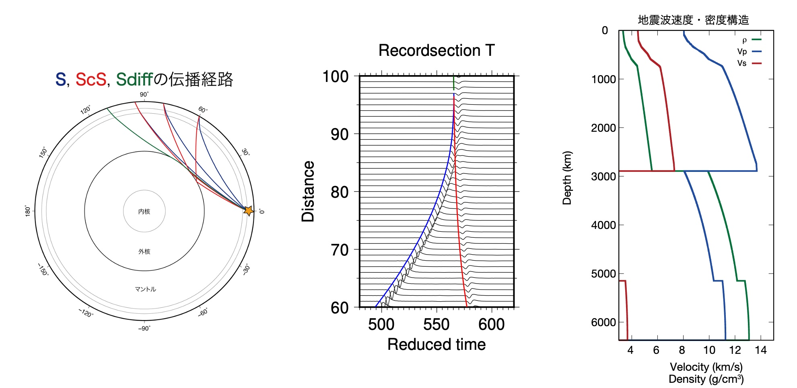

以下は、前回(第一回)、前々回(第二回)と同じ内容です. 未だ登録していない方、アンケートに回答されていない方は、下記のリンクから登録・回答よろしくお願いします.
*受講者の方は下記のリンクからSlackに登録してください.
https://join.slack.com/t/2021-vfd8698/shared_invite/zt-pfnlem9c-9d6csm12FtXduxZ~y9P_Ag
*質問は#helpチャンネルに投稿してください.
*授業前アンケートにご協力ください.
https://forms.gle/LsHX5saFGg8Rk8GP7
* 第二回のレジュメを参照してください.
(第二回の実習4.3)
DSM(理論波形計算ソフト)の導入(続き)
理論地震波形の計算
仮定した地球内部構造(1次元)の可視化
*ホームディレクトリとファイルの開き方についての説明をこちらにおきましたので, 参考になさってください.
wget https://www.dropbox.com/s/fq6b41uzgrzi2c9/tish-mpi-0.2.1.tar.gz
もしくは、
curl https://www.dropbox.com/s/fq6b41uzgrzi2c9/tish-mpi-0.2.1.tar.gz -O -J -L
tar xvfz tish-mpi-0.2.1.tar.gz && cd tish-mpi-0.2.1
make tish./tish < examples/test1.inf
cd && wget https://www.dropbox.com/s/87cwkgzulnp19k6/computeSeismogram.tar.gz
もしくは、
cd && curl https://www.dropbox.com/s/87cwkgzulnp19k6/computeSeismogram.tar.gz -O -J -L
tar xvfz computeSeismogram.tar.gz && cd computeSeismogram
cd 201506231218A && ln -s ~/tipsv-mpi-0.2.1/tipsv . && ./tipsv < MIASP_PSV.inf
ln -s ~/tish-mpi-0.2.1/tish . && ./tish < MIASP_SH.inf && cd ..
wget https://www.dropbox.com/s/a9ctec5pzylb4r6/spcsac.prop
もしくは、
curl https://www.dropbox.com/s/a9ctec5pzylb4r6/spcsac.prop -O -J -L
echo export PATH=~/Kibrary/bin:\$PATH >> ~/.zshrc
kibrary_operation spcsac.prop
もしくは、
java io.github.kensuke1984.kibrary.Operation spcsac.properties
cd spcsac20210518* && sac
でSACを起動する. SACのプロンプトにおいて, 以下のコマンドでプロット.
read 201506231218A/*.201506231218A.Ts
p1
上記コマンドは一部の波形のみプロットしているので, 他の波形も各自プロットしてみてください.
cd && wget https://www.dropbox.com/s/j4btcowhodu4l2x/vstructure.tar.gz
もしくは、
cd && curl https://www.dropbox.com/s/j4btcowhodu4l2x/vstructure.tar.gz -O -J -L
tar xvfz vstructure.tar.gz && cd Vstructure